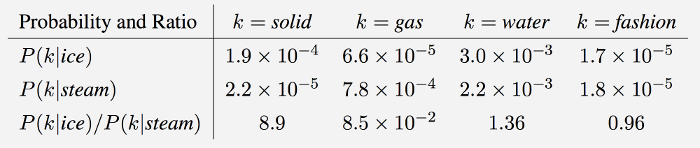

1 Natural Language Processing
1.0.1 Word Representations
- Embeddings
- Function W that maps words to high-dimensional vectors. Usually is just a lookup table
- W is initialized to have random vecs for each words. It learns meaningful vectors in order to perform some task
- Example: predict valid 5-grams (sequences of 5 words). The model will run each word in the 5-gram through W to get a vector representing it and feed those into a module R that predicts its validity. For this predictions, the net needs to learn good params for W and R. The interesting part is W.
- words with similar meanings have similar vectors. allows us to generalize from one sentence to a class of similar senteces.
- analogies between words seem to be encoded in the difference vectors between words. Ex: male-female difference vectors: W(woman) - W(man) approx eq W(aunt) - W(uncle) W(woman) - W(man) approx eq W(queen) - W(king). Theres probably a gender dimension, same thing for singular vs plural, and more sophisticated relationships.
- NN learn better ways to represent data automatically. Embeddings is an example.
- Can also be used to deal with the sparse matrix problem in recommender systems.
- t-SNE
For visualizing high-dimensional data. Words with similar meanings are close together. t-Distributed Stochastic Neighbor Embedding (t-SNE) is a (prize-winning) technique for dimensionality reduction that is particularly well suited for the visualization of high-dimensional datasets. The technique can be implemented via Barnes-Hut approximations, allowing it to be applied on large real-world datasets
- word2vec
unsupervised learning algo used for producing word embeddings. Two ways to implement it:
- CBOW (Continuous Bag of Words): have a window around a target word and consider words around it (its context). Supply these words as input into our net and use it to try to predict the target word.
- Skip-gram. Have a target word and try to predict the words in the window arount it. Predict the context around a word. Given a specific word in middle of sentence, look at the words nearby and pick one at random. The netword is going to tell us the probability for every word in out vocabulary of being the "nearby word" that we chose.
Feed word pairs. The network is going to learn statistics from the number of times each pairing shows up.
The nn does not know anything about the offset of the output word relative to the input word. It does not learn a different set of probs for the word before the input vs the word after.
If two diff words have very similar "context" (words around them), our model outputs similar results for these two words.
Replacing with negative log likelihood
Transformed to proper loss function:
where P is
For each existing center, context pair in corpus we’re computing their “similarity score”. And divide it by sum of each theoretically possible context — to know whether score is relatively high or low. As softmax is guaranteed to take a value between 0 and 1 it defines a valid probability distribution.
Input words are passed as one-hot vectors. Hidden-layer of linear units, then into softmax layer to make predictions. Train the hidden layer weight matrix to find efficient representations for our words. This is the embedding matrix. The hidden layer just operates as a lookup table. Its output is just the "word vector" for the input word.
In esence, it uses two embedding matrices, the first to lookup the center word vector, and this one is multiplied to the other embedding matrix of the context word vecs, which is like making a dot product between the center word vec to all the context word vecs, the highest dot product represents the most similar word, part of its context.
The embedding matrix has a size of the num of words by the num of neurons in the hidden layer (embed size). The embed size is much smaller than the number of unique words. its a trade-off: more features->extra computation and longer run times, but allow more subtle representations, and better models.
- GloVe.
See lecture 3 of Stanford NLP course
GloVe, coined from Global Vectors, is a model for distributed word representation. The model is an unsupervised learning algorithm for obtaining vector representations for words. Training is performed on aggregated global word-word co-occurrence statistics from a corpus, and the resulting representations showcase interesting linear substructures of the word vector space.
Creates embeddings by accumulating counts of co-occurrences. Count-based models learn their vectors by essentially doing dimensionality reduction on the co-occurrence counts matrix. They first construct a large matrix of (words x context) co-occurrence information, i.e. for each "word" (the rows), you count how frequently we see this word in some "context" (the columns) in a large corpus. The number of "contexts" is of course large, since it is essentially combinatorial in size. So then they factorize this matrix to yield a lower-dimensional (word x features) matrix, where each row now yields a vector representation for each word. In general, this is done by minimizing a "reconstruction loss" which tries to find the lower-dimensional representations which can explain most of the variance in the high-dimensional data. In the specific case of GloVe, the counts matrix is preprocessed by normalizing the counts and log-smoothing them. This turns out to be A Good Thing in terms of the quality of the learned representations.
However, as pointed out, when we control for all the training hyper-parameters, the embeddings generated using the two methods tend to perform very similarly in downstream NLP tasks. The additional benefits of GloVe over word2vec is that it is easier to parallelize the implementation which means it's easier to train over more data https://www.quora.com/How-is-GloVe-different-from-word2vec
- Intuition
The main intuition underlying the model is the simple observation that ratios of word-word co-occurrence probabilities have the potential for encoding some form of meaning. For example, consider the co-occurrence probabilities for target words ice and steam with various probe words from the vocabulary. Here are some actual probabilities from a 6 billion word corpus:

As one might expect, ice co-occurs more frequently with solid than it does with gas, whereas steam co-occurs more frequently with gas than it does with solid. Both words co-occur with their shared property water frequently, and both co-occur with the unrelated word fashion infrequently. Only in the ratio of probabilities does noise from non-discriminative words like water and fashion cancel out, so that large values (much greater than 1) correlate well with properties specific to ice, and small values (much less than 1) correlate well with properties specific of steam. In this way, the ratio of probabilities encodes some crude form of meaning associated with the abstract concept of thermodynamic phase.
The training objective of GloVe is to learn word vectors such that their dot product equals the logarithm of the words' probability of co-occurrence. Owing to the fact that the logarithm of a ratio equals the difference of logarithms, this objective associates (the logarithm of) ratios of co-occurrence probabilities with vector differences in the word vector space. Because these ratios can encode some form of meaning, this information gets encoded as vector differences as well. For this reason, the resulting word vectors perform very well on word analogy tasks.
Pij is the count of how often word i appears in context of word j. P is the co-occurrence matrix. f is a weighting function which help us to prevent learning only from extremely common word pairs.
- Matrix Factorization
The idea then is to apply matrix factorization to approximate this matrix as depicted in the following figure.
Considering the Word-Context (WC) matrix, Word-Feature (WF) matrix and Feature-Context (FC) matrix, we try to factorize WC = WF x FC, such that we we aim to reconstruct WC from WF and FC by multiplying them. For this, we typically initialize WF and FC with some random weights and attempt to multiply them to get WC’ (an approximation of WC) and measure how close it is to WC. We do this multiple times using Stochastic Gradient Descent (SGD) to minimize the error. Finally, the Word-Feature matrix (WF) gives us the word embeddings for each word where F can be preset to a specific number of dimensions. https://www.kdnuggets.com/2018/04/implementing-deep-learning-methods-feature-engineering-text-data-glove.html
- Hyperparameters
- Dimension: best ~300, slight drop-off afterwards
- Window size: around 8 each center word
- Intuition
- FastText
Fasttext (which is essentially an extension of word2vec model), treats each word as composed of character ngrams. So the vector for a word is made of the sum of this character n grams. At each training step in FastText, the mean of the target word vector and its component n-gram vectors are used for training. The adjustment that is calculated from the error is then used uniformly to update each of the vectors that were combined to form the target. This adds a lot of additional computation to the training step. At each point, a word needs to sum and average its n-gram component parts. The trade-off is a set of word-vectors that contain embedded sub-word information. These vectors have been shown to be more accurate than Word2Vec vectors by a number of different measures
- Generate better word embeddings for rare words ( even if words are rare their character n grams are still shared with other words - hence the embeddings can still be good).
- Out of vocabulary words - they can construct the vector for a word from its character n grams even if word doesn't appear in training corpus. Both Word2vec and Glove can't.
- since the training is at character n-gram level, it takes longer to generate fasttext embeddings compared to word2vec
- As the corpus size grows, the memory requirement grows too - the number of ngrams that get hashed into the same ngram bucket would grow.
- The usage of character embeddings (individual characters as opposed to n-grams) for downstream tasks have recently shown to boost the performance of those tasks compared to using word embeddings like word2vec or Glove.
1.0.2 Seq2Seq
1.0.3 Charnn
1.0.4 Machine Translation
1.0.5 References
- word2vec tutorial-skip gram
- negativesampling word2vec
- How is Glove different from word2vec
- Glove
- Stanford CS224n: Natural Language Processing with deep learning
- Difference between word2vec and fastText
- https://nathanrooy.github.io/posts/2018-03-22/word2vec-from-scratch-with-python-and-numpy/
- https://towardsdatascience.com/implementing-word2vec-in-pytorch-skip-gram-model-e6bae040d2fb